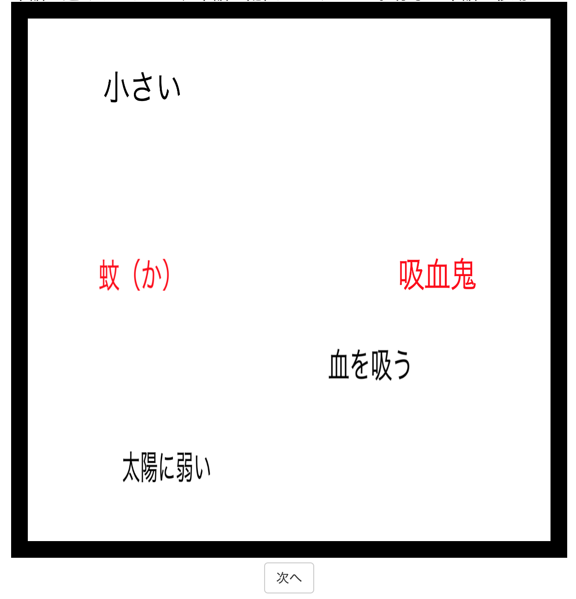
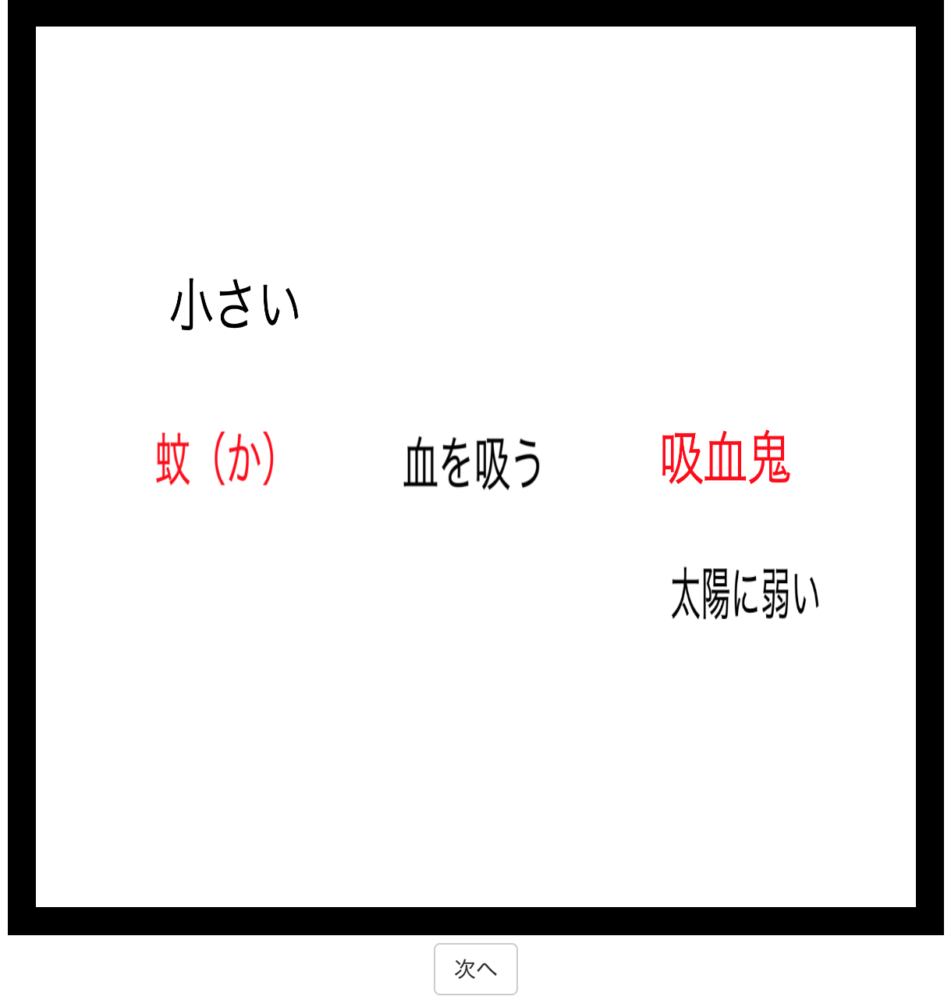

<!DOCTYPE html>
<html>
  <head>
    <meta charset="UTF-8" />
    <script src="./jspsych.js"></script>
    <script src="./plugins/plugin-survey-html-form.js"></script>
    <script src="./plugins/plugin-html-keyboard-response.js"></script>
    <script src="./plugins/plugin-survey-text.js"></script>
    <script src="./plugins/plugin-fullscreen.js"></script>
    <script src="./plugins/plugin-survey-multi-choice.js"></script>
    <script src="./plugins/plugin-free-sort.js"></script>
    <script src="./plugins/plugin-preload.js"></script>
    <script src="./plugins/plugin-canvas-keyboard-response.js"></script>
    <script src="./stimulus/stimulus_practice_sort.js"></script>
    <script src="./stimulus/stimulus_main_sort_a.js"></script>
    <script src="./stimulus/stimulus_main_sort_b.js"></script>
    <script src="./stimulus/stimulus_main_sort_c.js"></script>
    <script src="http://ajax.aspnetcdn.com/ajax/jQuery/jquery-3.4.1.min.js"></script>
    <link rel="stylesheet" href="./css/jspsych.css" />
  </head>
  <body></body>
  <script>

    //Though the original program save the data to the server, this program just showed the result obtained in the program.
    const jsPsych = initJsPsych({
        on_finish: () => {
            jsPsych.data.displayData();
        },
    });


    //query文字列を取得して、参加者情報として取得する
    //locationにこのURLに対するリダイレクトが書かれるはずだからそれを拾ってくる
    //参考1: https://stackoverflow.com/questions/57495144/javascript-url-searchparams-not-returning-anything
    //参考2: https://zenn.dev/snishiyama/articles/c9ad1b09baae4b

    //parameters for setting the condition
    const queries = {};
    queries["cwid"] = "XXXXX";//for debugging
    queries["Condition"] = "A";//please replace A to C if you are interested in other conditions
    jsPsych.data.addProperties(queries);

    const ex_start_time = new Date();
    const ex_start_time_text = ex_start_time.getFullYear()+"/"+(ex_start_time.getMonth()+1)+"/"+ex_start_time.getDate()+ " "+ ex_start_time.getHours()+":"+("0" + ex_start_time.getMinutes()).slice(-2)+":"+("0" + ex_start_time.getSeconds()).slice(-2);
    jsPsych.data.addProperties({"StartTime":ex_start_time_text});//参加者情報に格納

    var preload = {
        type: jsPsychPreload,
        auto_preload: true
    };

    //instruction and preparation of the task
    //all the stimulus were presented in Japanese
    const FullScreen = {
        type: jsPsychFullscreen,
        fullscreen_mode: true,
        message:"これから実験を始めます。実験はフルスクリーンで行われます。<br>"+
        "（フルスクリーン非対応ブラウザの場合を除く）<br>"+
        "*なお、実験を途中でやめる場合は、Escキーを押すことでフルスクリーンを解除することができます。<br><br>"+
        "「次へ進む」ボタンを押すと次に進みます。<br><br>",
        button_label:"次へ進む",
        delay_after:1000
    };

    const instruction_1a = {
        type: jsPsychSurveyHtmlForm,
        html:
            "<p style='text-align:left'>この課題では、<b>似ている単語同士を並べる課題</b>に取り組んでいただきます。<br></p>" +
            "<p style='text-align:left'>それぞれの課題を1回ずつ終えることを1試行とし、これに複数試行取り組んでいただくのがあなたの課題になります。<br></p>" +            
            "<p><br></p>" +
            "<p style='text-align:left'>以上の教示を理解したら「次に進む」ボタンを押してください。課題の取り組み方について説明します。</p>",
        button_label: "次に進む",
        data: { task: 'instruction_1a'},
    };

    const instruction_1b = {
        type: jsPsychSurveyHtmlForm,
        html:
            "<p style='text-align:left'>この課題では、はじめに以下のような画面が呈示されます。<br></p>" +
            "<p style='text-align:left'><u>あなたは、以下に呈示された単語のそれぞれを、意味が近いものは近くに、意味が遠いものは遠くに置くようにしてください。</u></p><br>" +  
            "" +
            "<p style='text-align:left'>*この画面は説明用のため、黒枠内の単語は動かせません。</p>" +
            "<p><br></p>" +
            "<p style='text-align:left'>黒字で書かれた単語はマウスの左クリックを押している間、動かせるようになっているので、<br>類似する単語が近くなるように、すべての黒字の単語を適切な位置に動かして配置してください。</p>" +
            "<p style='text-align:left'>一方で、赤字で書かれた単語は動かせません。</p>" +
            "<p><br></p>" +
            "<p style='text-align:left'>以上の教示を理解したら「次に進む」ボタンを押してください。</p>",
        button_label: "次に進む",
        data: { task: 'instruction_1b'},
    };

    const instruction_1c = {
        type: jsPsychSurveyHtmlForm,
        html:
            "" +
            "<p style='text-align:left'>*この画面は説明用のため、黒枠内の単語は動かせません。<br></p>" +
            "<p style='text-align:left'>さきほどの画面の単語を並び替えると、「蚊」と「小さい」は似ているので近くに配置し、その他の単語とは類似点が見られないため、遠くになるように配置しています。</p>" +
            "<p style='text-align:left'>同様に、「吸血鬼」と「太陽」は似ているので近くに配置し、その他の単語とは類似点が見られないため、遠くになるように配置しています。</p>" +
            "<p style='text-align:left'>一方で、「血を吸う」は「蚊」と「吸血鬼」のそれぞれと似ているので近くに配置し、その他の単語とは類似点が見られないため、遠くになるように配置しています。</p>" +
            "<p><br></p>" +
            "<p style='text-align:left'>すべての単語について並び替えが終わったら、画面下部にある「次へ」ボタンを押してください。</p>" +
            "<p><br></p>" +
            "<p style='text-align:left'>以上の教示を理解したら「練習に進む」ボタンを押してください。練習として3つの課題に取り組んでいただきます。</p>",
        button_label: "練習に進む",
        data: { task: 'instruction_1c'},
    };

    //実験刺激の作成
    const createTrial = (setting) => {

        const MultiArrangementTask = {
            type: jsPsychFreeSort,
            stimuli: function(){
                //stimulusの初期化
                const stimulus = [];
                stimulus.push(setting.TargetDirTopic, setting.TargetDirVehicle, setting.TargetDirF1);

                //F2,F3があれば入れる
                if(setting.TargetDirF2 != ""){
                    stimulus.push(setting.TargetDirF2);
                };
                if(setting.TargetDirF3 != ""){
                    stimulus.push(setting.TargetDirF3);
                }
                return stimulus;
            },
            stim_height: 80,
            stim_width: 120,
            sort_area_height: 600,
            sort_area_width: 600,
            prompt: '類似する単語が近くなるように、すべての黒字の単語を適切な位置に配置してください。赤字の単語は移動できません。単語は上に重なるように近づけることもできます。 ',
            column_spread_factor: 0.5,
            stim_starts_inside: true,
            sort_area_shape: "square",
            button_label: "次へ",
            counter_text_unfinished: "すべての単語をエリア内に収めてください",
            counter_text_finished: "",
            change_border_background_color: false,

            data: {
                task: 'MultiArrangementTask',
                TrialType: setting.TrialType,
                SetType: setting.SetType,
                FinStimID: setting.FinStimID,
                NID: setting.NID,
                Topic: setting.Topic,
                Vehicle: setting.Vehicle,
                NumFeatures: setting.NumFeatures,
                F1: setting.F1,
                F2: setting.F2,
                F3: setting.F3,
                TargetDirTopic: setting.TargetDirTopic,
                TargetDirVehicle: setting.TargetDirVehiclel,
                TargetDirF1: setting.TargetDirF1,
                TargetDirF2: setting.TargetDirF2,
                TargetDirF3: setting.TargetDirF3,
            },

            on_load: function(data){
                document.querySelectorAll('img[data-src*="T"]')[0].style.top = "260px";
                document.querySelectorAll('img[data-src*="T"]')[0].style.left = "80px";
                document.querySelectorAll('img[data-src*="V"]')[0].style.top = "260px";
                document.querySelectorAll('img[data-src*="V"]')[0].style.left = "400px";

                document.querySelectorAll('img[data-src*="T"]')[0].style.pointerEvents = "none";
                document.querySelectorAll('img[data-src*="V"]')[0].style.pointerEvents = "none";
            },

            on_finish: function(data){
                data.iniloc_T_x = jsPsych.data.get().last(1).values()[0].init_locations[0].x;
                data.iniloc_T_y = jsPsych.data.get().last(1).values()[0].init_locations[0].y;
                data.iniloc_V_x = jsPsych.data.get().last(1).values()[0].init_locations[1].x;
                data.iniloc_V_y = jsPsych.data.get().last(1).values()[0].init_locations[1].y;
                data.iniloc_F1_x = jsPsych.data.get().last(1).values()[0].init_locations[2].x;
                data.iniloc_F1_y = jsPsych.data.get().last(1).values()[0].init_locations[2].y;

                if(jsPsych.data.get().last(1).values()[0].init_locations.length >= 4){
                    data.iniloc_F2_x = jsPsych.data.get().last(1).values()[0].init_locations[3].x;
                    data.iniloc_F2_y = jsPsych.data.get().last(1).values()[0].init_locations[3].y;
                };

                if(jsPsych.data.get().last(1).values()[0].init_locations.length >= 5){
                    data.iniloc_F3_x = jsPsych.data.get().last(1).values()[0].init_locations[4].x;
                    data.iniloc_F3_y = jsPsych.data.get().last(1).values()[0].init_locations[4].y;
                };

                data.finloc_T_x = jsPsych.data.get().last(1).values()[0].final_locations[0].x;
                data.finloc_T_y = jsPsych.data.get().last(1).values()[0].final_locations[0].y;
                data.finloc_V_x = jsPsych.data.get().last(1).values()[0].final_locations[1].x;
                data.finloc_V_y = jsPsych.data.get().last(1).values()[0].final_locations[1].y;
                data.finloc_F1_x = jsPsych.data.get().last(1).values()[0].final_locations[2].x;
                data.finloc_F1_y = jsPsych.data.get().last(1).values()[0].final_locations[2].y;

                if(jsPsych.data.get().last(1).values()[0].final_locations.length >= 4){
                    data.finloc_F2_x = jsPsych.data.get().last(1).values()[0].final_locations[3].x;
                    data.finloc_F2_y = jsPsych.data.get().last(1).values()[0].final_locations[3].y;
                };

                if(jsPsych.data.get().last(1).values()[0].final_locations.length >= 5){
                    data.finloc_F3_x = jsPsych.data.get().last(1).values()[0].final_locations[4].x;
                    data.finloc_F3_y = jsPsych.data.get().last(1).values()[0].final_locations[4].y;
                };
            },
        };

        const trial = {
            timeline: [MultiArrangementTask],
        };

        return trial;
    };

    const instruction_1d = {
        type: jsPsychSurveyHtmlForm,
        html:
            "<p style='text-align:left'>1つ目の例ですと、呈示された黒字の単語「大切だ」「価値がある」「輝かしい」がいずれも赤字の単語「幸福」「黄金」の両方と意味的に類似すると判断したときは、<br>2つの赤字の単語の間に、3つの黒字単語を配置することになります。<br>加えて、「大切だ」と「価値がある」が類似すると判断した場合は2つの単語は近くに、「輝かしい」がこれらの単語とは類似しないと判断した場合は他の2つの単語とは少し離れたところに配置されると思います。</p>" +
            "<p style='text-align:left'>同様に、2つ目の例ですと、呈示された黒字の単語「速い」はいずれも赤字の単語「弾丸」「ロケット」の両方と意味的に類似すると判断したときは、2つの赤字の単語の間に黒字の単語を配置することになります。</p>" +
            "<p style='text-align:left'>一方で、3つ目の例ですと、「物を映す」という単語は「モニター」と類似し、「物を冷やす」という単語は「冷蔵庫」と類似すると判断したときは、2つの黒字の単語をそれぞれモニターか冷蔵庫のいずれか一方の近くに配置することになります。</p>" +
            "<p><br></p>" +
            "<p style='text-align:left'>次のページから本番に移ります<br></p>" +
            "<p style='text-align:left'><b>休憩を取る場合は、この画面で取り、本番（15分~20分）は集中して休まずに取り組んでください。</b><br></p>" +
            "<p><br></p>" +
            "<p style='text-align:left'>以上の教示を理解したら「本番に進む」ボタンを押して、本番に取り組んでください。</p>",
        button_label: "本番に進む",
        data: { task: 'instruction_1d'},
    };

    const debrief = {
        type: jsPsychHtmlKeyboardResponse,
        stimulus:
              "<p style='text-algin:left'>これで実験は終了です。お疲れ様でした。</p>" +
              "<p style='text-algin:left'>スペースキーを押して次の実験に遷移するのをお待ちください。</p>",
        choices: [' '],
        data: { task: 'debrief' },

        on_finish:function(data){
            const ex_finish_time = new Date();
            const ex_finish_time_text = ex_finish_time.getFullYear()+"/"+(ex_finish_time.getMonth()+1)+"/"+ex_finish_time.getDate()+ " "+ ex_finish_time.getHours()+":"+("0" + ex_finish_time.getMinutes()).slice(-2)+":"+("0" + ex_finish_time.getSeconds()).slice(-2);
            jsPsych.data.addProperties({"EndTime":ex_finish_time_text});//参加者情報に格納
        }
    };

    const practice_trials = practice_trial_settings.map((s) => createTrial(s));
    const practice_trials_tl = {timeline: practice_trials};

    const main_trials = (() => {
        switch (queries["Condition"]) {
            case "A": return main_trial_settings_a.map((s) => createTrial(s));
            case "B": return main_trial_settings_b.map((s) => createTrial(s));
            case "C": return main_trial_settings_c.map((s) => createTrial(s));
            default : console.log("main trial: file load failed");
        }
    })();
    const main_trials_tl = {timeline: jsPsych.randomization.repeat(main_trials, 1)};

    jsPsych.run([preload, FullScreen, instruction_1a, instruction_1b, instruction_1c,
        practice_trials_tl,
        instruction_1d,
        main_trials_tl,
        debrief]);

  </script>
</html>